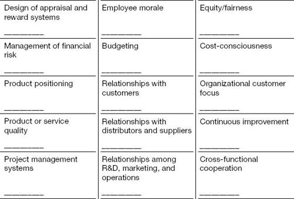

After eight years in marketing at a leading consumer electronics company, Julia Gould was promoted to lead a major new product development project. Up to that point, her track record had been stellar. Her intelligence, focus, and determination had won her recognition and early promotion to increasingly senior positions. The company had designated her as a high-potential and had positioned her on the fast track to senior leadership.
Julia was assigned to be the launch manager for one of the company’s hottest new products. It was her responsibility to coordinate the work of a cross-functional team drawn from marketing, sales, R&D, and manufacturing. The goal: to seamlessly move the product from R&D to production, oversee a rapid ramp-up, and streamline the market introduction.
Unfortunately, Julia ran into trouble early on. Her earlier success in marketing was the result of extraordinary attention to detail. Accustomed to managing with authority and making the calls, she had a high need for control and a tendency to micromanage. When she tried to continue making decisions, members of the team initially said nothing. But soon two key members challenged her knowledge and authority. Stung, she focused on the area she knew best: the marketing aspects of the launch. Her efforts to micromanage the members of the marketing team alienated them. Within a month and a half, Julia was back in marketing, and someone else was leading the team.
Julia failed because she did not make the leap from being a strong functional performer to taking on a cross-functional, project-leadership role. She failed to grasp that the strengths that had made her successful in marketing could be liabilities in a role that required her to lead without direct authority or superior expertise. She kept doing what she knew how to do, making her feel confident and in control. The result, of course, was the opposite. By not letting go of the past and not fully embracing her new role, she squandered a big opportunity to rise in the organization.
It’s a mistake to believe that you will be successful in your new job by continuing to do what you did in your previous job, only more so. “They put me in the job because of my skills and accomplishments,” the reasoning goes. “So that must be what they expect me to do here.” This thinking is destructive, because doing what you know how to do (and avoiding what you don’t) can appear to work, at least for a while. You can exist in a state of denial, believing that because you’re being efficient, you’re being effective. You may keep believing this until the moment the walls come crashing down around you.
What might Julia have done differently? She should have focused on better preparing herself for the new position. At the broadest level, preparing yourself means letting go of the past and embracing the imperatives of the new situation to give yourself a running start. It can be hard work, but it is essential. Often, promising managers fail in new roles because they’ve failed to prepare themselves by embracing the necessary changes in perspective.
The starting point for preparing yourself is to understand the types of transitions you’re experiencing. To illustrate the challenges associated with different types of transitions (discussed in the introduction), I focus here on the two most frequently experienced types of transitions: promotions and onboarding into new companies.
A promotion marks the result of years of hard work to persuade influential people in the organization that you’re willing and able to move to the next level. But it also marks the beginning of a new journey. You must figure out what it takes to be excellent in the new role, how to exceed the expectations of those who promoted you, and how to position yourself for still greater things. Specifically, every promotion presents new leaders with a core set of challenges to be surmounted.
Each time you’re promoted, your horizon broadens to encompass a wider set of issues and decisions. So you need to gain and sustain a high-level perspective in your new role. To be successful, Julia needed to shift her focus from her marketing function to the full array of issues relating to the product launch.
You also need to learn to strike the right balance between keeping the wide view and drilling down into the details. This juggling act can be challenging, because what had been the fifty-thousand-foot view in your previous role may be equivalent to the world at five thousand feet, or even five hundred feet, in your new job.
The complexity and ambiguity of the issues you are dealing with increase every time you get promoted. So you’ll need to rethink what you delegate. No matter where you land, the keys to effective delegation remain much the same: you build a team of competent people whom you trust, you establish goals and metrics to monitor their progress, you translate higher-level goals into specific responsibilities for your direct reports, and you reinforce them through process.
When you get promoted, however, what you delegate usually needs to change. If you’re leading an organization of five people, it may make sense to delegate specific tasks such as drafting a piece of marketing material or selling to a particular customer. In an organization of fifty people, your focus may shift from tasks to projects and processes. At five hundred people, you often need to delegate responsibility for specific products or platforms. And at five thousand people, your direct reports may be responsible for entire businesses.
Conventional wisdom says that the higher you go, the easier it is to get things done. Not necessarily. Paradoxically, when you get promoted, positional authority often becomes less important for pushing agendas forward. Like Julia, you may indeed gain increased scope to influence decisions that affect the business, but the way you need to engage may be quite different. Decision making becomes more political—less about authority, and more about influence. That isn’t good or bad; it’s simply inevitable.
There are two major reasons this is so. First, the issues you’re dealing with become much more complex and ambiguous when you move up a level—and your ability to identify “right” answers based solely on data and analysis declines correspondingly. Decisions are shaped more by others’ expert judgments and who trusts whom, as well as by networks of mutual support.
Second, at a higher level of the organization, the other players are more capable and have stronger egos. Remember, you were promoted because you are able and driven; the same is true for everyone around you. So it shouldn’t come as a surprise that the decision-making game becomes much more bruising and politically charged the higher up you go. It’s critical, then, for you to become more effective at building and sustaining alliances.
The good news about moving up is that you get a broader view of the business and more latitude to shape it. The bad news is that you are farther from the front lines and more likely to receive filtered information. To avoid this, you need to establish new communication channels to stay connected with what is happening where the action is. You might maintain regular, direct contact with select customers, for instance, or meet regularly with groups of frontline employees, all without undermining the integrity of the chain of command.
You also need to establish new channels for communicating your strategic intent and vision across the organization—convening town-hall–type meetings rather than individual or small-group sessions, or using electronic communication to broadcast your messages to the widest possible audiences. Your direct reports should play a greater role in communicating your vision and ensuring the spread of critical information—something to remember when you’re evaluating the leadership skills of the team members you’ve inherited.
“All the world’s a stage,” as William Shakespeare put it in the play As You Like It, “and all the men and women merely players.” One inescapable reality of promotion is that you attract much more attention and a higher level of scrutiny than before. You become the lead actor in a crucial public play. Private moments become fewer, and there is mounting pressure to exhibit the right kind of leadership presence at all times.
That’s why it’s important to get an early fix on what “leadership presence” means in your new role: what does a leader look like at your new level in the hierarchy? How does he act? What kind of personal leadership brand do you want to have in the new role? How will you make it your own? These are critical considerations, worth taking the time to explore.
These core promotion challenges are summarized in figure 1-1.
In promotion situations, leaders typically understand a lot about their organizations but must develop the behaviors and competencies required to be effective at new levels. If you’ve been hired into a new organization, you will confront very different transition challenges. Leaders joining new companies often are making lateral moves: they’ve been hired to do things that they’ve been successful doing elsewhere. Their difficulties lie in adjusting to new organizational contexts that have different political structures and cultures.
FIGURE 1-1
Core promotion challenges
For each core challenge there are corresponding strategies that newly promoted leaders should employ.
To illustrate, consider the experience of David Jones at Energix, a small, rapidly growing wind energy company. David was recruited from a highly regarded global manufacturing firm. An engineer by training, David had risen steadily through the ranks in R&D to become vice president of new-product development for the company’s electrical distribution division. David learned to lead in a company that was renowned for its leadership bench strength. The culture leaned toward a command-and-control style of leadership, but people were still expected to speak their minds—and did. The company had long been a leader in the adoption and refinement of process-management methodologies, including total quality management, lean manufacturing, and six sigma.
As the new head of R&D at Energix, David entered a company that had weathered the typical start-up transitions—going from two people to two hundred to two thousand—and was now poised to become a major corporation. As a result, the CEO had told David more than once during the recruiting process that things had to change. “We need to become more disciplined,” the chief executive had said. “We’ve succeeded by staying focused and working as a team. We know each other, we trust each other, and we’ve come a long way together. But we need to be more systematic in how we do things, or we won’t be able to capitalize on and sustain our new size.” So David understood that his first major task would be to identify, systematize, and improve the core processes of the R&D organization—an essential first step in laying the foundation for sustained growth.
David dug into the new job with his usual gusto. What he found was a company that had been run largely by the seat of its collective pants. Many important operational and financial processes were not well established; others weren’t sufficiently controlled. In new-product development alone, dozens of projects had inadequate specifications or insufficiently precise milestones and deliverables. One critical project, Energix’s next-generation large turbine, was nearly a year behind schedule and way over budget. David came away from his first couple of weeks wondering just what or who had held Energix together—and feeling more convinced than ever that he could push this company to the next level.
But then he began to hit roadblocks. The senior management committee (SMC) meetings started out frustrating and got worse. David, who was used highly disciplined meetings with clear agendas and actionable decisions, found the committee members’ elliptical discussions and consensus-driven process agonizing. Particularly troubling to him was the lack of open discussion about pressing issues and the sense that decisions were being made through back channels. When David raised a sensitive or provocative issue with the SMC, or pressed others in the room for commitments to act, people would either fall silent or recite a list of reasons why things couldn’t be done a certain way.
Two months in, with his patience frayed, David decided to simply focus on what he had been hired to do: revamp the new-product development processes to support the company’s growth. So he convened a meeting of the heads of R&D, operations, and finance to discuss how to proceed. At that gathering, David presented a plan for setting up teams that would map out existing processes and conduct a thorough redesign effort. He also outlined the required resource commitments—for instance, assigning strong people from operations and finance to participate in the teams, and hiring external consultants to support the analysis.
Given the conversations he’d had with the CEO during recruiting and the clear mandate he felt he’d been given, David was shocked by the stonewalling he encountered. The attendees listened but wouldn’t commit themselves or their people to David’s plan. Instead, they urged David to bring his plan before the whole SMC because it affected many parts of the company and had the potential to be disruptive if not managed carefully. (He later learned that two of the participants had gone to the CEO soon after the meeting to register their concerns; David was “a bull in a china shop,” according to one. “We have to be careful not to upset some delicate balances as we get out the next-gen turbine,” said the other. And both were of the firm opinion that “letting Jones run things might not be the right way to go.”) Even more troubling, David experienced a noticeable and worrisome chill in his relationship with the CEO.
Joining a new company is akin to an organ transplant—and you’re the new organ. If you’re not thoughtful in adapting to the new situation, you could end up being attacked by the organizational immune system and rejected. Witness David’s challenges at Energix.
When surveyed, senior HR practitioners overwhelmingly assess the challenge of coming in from the outside as “much harder” than being promoted from within.1 They attribute the high failure rate of outside hires to several barriers, notably the following:
- Leaders from outside the company are not familiar with informal networks of information and communication.
- Outside hires are not familiar with the corporate culture and therefore have greater difficulty navigating.
- New people are unknown to the organization and therefore do not have the same credibility as someone who is promoted from within.
- A long tradition of hiring from within makes it difficult for some organizations to accept outsiders.
To overcome these barriers and succeed in joining a new company, you should focus on four pillars of effective onboarding: business orientation, stakeholder connection, alignment of expectations, and cultural adaptation.
Business orientation is the most straightforward part of onboarding. The sooner you understand the business environment in which you’re operating, the sooner you can make productive contributions. Getting oriented to the business means learning about the company as a whole and not only your specific parts of the business. As you work to understand the organization, it’s worth thinking beyond simply the financials, products, and strategy. Regardless of your position, for example, it’s beneficial to learn about the brands and products you will be supporting, whether or not you’re directly involved in sales and marketing. Focus, too, on understanding the operating model, planning and performance evaluation systems, and talent management systems, because they often powerfully influence how you can most effectively have an impact.
It’s also essential to develop the right relationship wiring as soon as possible. This means identifying key stakeholders and building productive working relationships. As with David, there is a natural but dangerous tendency for new leaders to focus on building vertical relationships early in their transitions—up to their bosses and down to their teams. Often, insufficient time is devoted to lateral relationship building with peers and key constituencies outside the new leader’s immediate organization. Remember: you don’t want to be meeting your neighbors for the first time in the middle of the night when your house is burning down.
No matter how well you think you understand what you’re expected to do, be sure to check and recheck expectations once you formally join your new organization. Why? Because understandings that are developed before you join—about mandates, support, and resources—may not prove to be fully accurate once you’re in the job. It isn’t that you’ve been actively misled; rather, it’s because recruiting is like romance, and employment is like marriage. As David learned, newly hired leaders can easily come to believe that they have more latitude to make changes than is actually the case. If they act on these sorts of incorrect assumptions, they easily can trigger unnecessary resistance and even derail themselves.
It also is important to understand and factor in the expectations of key constituencies other than your new boss—for example, key people in finance at corporate headquarters if you’re working in a business unit. This is especially the case if they’re likely to influence how you’re evaluated and rewarded.
The most daunting challenge for leaders joining new organizations is adapting to unfamiliar cultures. For David, this meant making the transition from an authority-driven, process-focused culture to a consensus-oriented, relational one.
To adapt successfully, you need to understand what the culture is overall and how it’s manifested in the organization or unit you’re joining (because different units may have different subcultures). In doing this, it helps to think of yourself as an anthropologist sent to study a newly discovered civilization.
What is culture? It’s a set of consistent patterns people follow for communicating, thinking, and acting, all grounded in their shared assumptions and values. The culture in any organization is generally multilayered, as illustrated in figure 1-2. At the top of the culture pyramid are the surface elements—the symbols, shared languages, and other things most visible to outsiders. Obvious symbols include organizational logos, the way people dress, and the way office space is organized and allocated.
Likewise, every organization typically has a shared language—a long list of acronyms, for instance, describing business units, products, processes, projects, and other elements of the company. So it’s essential that you invest early on in learning to speak like the locals. At this level, it’s relatively easy for newcomers to figure out how to fit in. If people at your level don’t wear plaid, then you shouldn’t either, unless you’re trying to signal an intention to change the culture.
FIGURE 1-2
The culture pyramid

Beneath the surface layer of symbols and language lies a deeper, less visible set of organizational norms and accepted patterns of behavior. These elements of culture include things like how people get support for important initiatives, how they win recognition for their accomplishments, and how they view meetings—are they seen as forums for discussion or rubber-stamp sessions? (See the box “Identifying Cultural Norms.”) These norms and patterns often are difficult to discern and become evident only after you’ve spent some time in a new environment.
And finally, underlying all cultures are the fundamental assumptions that everyone has about the way the world works—the shared values that infuse and reinforce all the other elements in the pyramid. A good example is the general beliefs people in the company have about the right way to distribute power based on position. Are executives in particular roles given lots of decision-making power from Day 1, or is the degree of authority a function of seniority? Or does the organization operate according to consensus, where the ability to persuade is key? Again, these elements of the culture are often invisible and can take time to become clear.
Identifying Cultural Norms
The following domains are areas in which cultural norms may vary significantly from company to company. Transitioning leaders should use this checklist to help them figure out how things really work in the organizations they’re joining.
- Influence. How do people get support for critical initiatives? Is it more important to have the support of a patron within the senior team, or affirmation from your peers and direct reports that your idea is a good one?
- Meetings. Are meetings filled with dialogue on hard issues, or are they simply forums for publicly ratifying agreements that have been reached in private?
- Execution. When it comes time to get things done, which matters more—a deep understanding of processes or knowing the right people?
- Conflict. Can people talk openly about difficult issues without fear of retribution? Or do they avoid conflict—or, even worse, push it to lower levels, where it can wreak havoc?
- Recognition. Does the company promote stars, rewarding those who visibly and vocally drive business initiatives? Or does it encourage team players, rewarding those who lead authoritatively but quietly and collaboratively?
- Ends versus means. Are there any restrictions on how you achieve results? Does the organization have a well-defined, well-communicated set of values that is reinforced through positive and negative incentives?
Armed with a deeper understanding of the business situation, political networks, expectations, and culture, you will be in a much stronger position to figure out how to strike the right balance between adapting to the new organization and working to alter it. See table 1-1 for issues and action items related to each of the four pillars as you onboard into a new organization.
The challenges of entering new cultures arise not only when new leaders are transitioning between two different companies, but also when they move between units—the “inboarding” challenge—as well as when they make international moves. Why? It’s because both kinds of change typically require new leaders to grapple with new work cultures. The same basic approach to cultural assessment and adaptation can be applied (with suitable modifications) in these situations.2
With a deeper understanding of the types of transition challenges you face, you can now focus on preparing yourself to make the leap. How can you be sure to meet the challenges of your new position? You can focus on basic principles for getting ready for your new role, as discussed next.
TABLE 1-1
Onboarding checklists
Business orientation checklist
- As early as possible, get access to publicly available information about financials, products, strategy, and brands.
- Identify additional sources of information, such as websites and analyst reports.
- If appropriate for your level, ask the business to assemble a briefing book.
- If possible, schedule familiarization tours of key facilities before the formal start date.
Stakeholder connection checklist
- Ask your boss to identify and introduce you to the key people you should connect with early on.
- If possible, meet with some stakeholders before the formal start.
- Take control of your calendar, and schedule early meetings with key stakeholders.
- Be careful to focus on lateral relationships (peers, others) and not only vertical ones (boss, direct reports).
Expectations alignment checklist
- Understand and engage in business planning and performance management.
- No matter how well you think you understand what you need to do, schedule a conversation with your boss about expectations in your first week.
- Have explicit conversations about working styles with bosses and direct reports as early as possible.
Cultural adaptation checklist
- During recruiting, ask questions about the organization’s culture.
- Schedule conversations with your new boss and HR to discuss work culture, and check back with them regularly.
- Identify people inside the organization who could serve as culture interpreters.
- After thirty days, conduct an informal 360-degree check-in with your boss and peers to gauge how adaptation is proceeding.
The move from one position to another usually happens in a blur. You rarely get much notice before being thrust into a new job. If you’re lucky, you get a couple of weeks, but more often the move is measured in days. You get caught up in a scramble to finish your old job even as you try to wrap your arms around the new one. Even worse, you may be pressured to perform both jobs until your previous position is filled, making the line of demarcation even fuzzier.
Because you may not get a clean transition in job responsibilities, it is essential to discipline yourself to make the transition mentally. Pick a specific time, such as a weekend, and use it to imagine yourself making the shift. Consciously think of letting go of the old job and embracing the new one. Think hard about the differences between the two, and consider how you must now think and act differently. Take the time to celebrate your move, even informally, with family and friends. Use the time to touch base with your informal advisers and counselors and to ask for advice. The bottom line: do whatever it takes to get into the transition state of mind.
You have been offered your new position because those who selected you think you have the skills to succeed. But as you saw in the cases of Julia Gould and David Jones, it can be fatal to rely too much on what made you successful in the past.
One way to pinpoint your vulnerabilities is to assess your problem preferences—the kinds of problems toward which you naturally gravitate. Everyone likes to do some things more than others. Julia’s preference was marketing; for others, it may be finance or operations. Your preferences have probably influenced you to choose jobs where you can do more of what you like to do. As a result, you’ve perfected those skills and feel most competent when you solve problems in those areas, and that reinforces the cycle. This pattern is like exercising your right arm and ignoring your left: the strong arm gets stronger, and the weak one atrophies. The risk, of course, is that you create an imbalance that leaves you vulnerable when success depends on being ambidextrous.
Table 1-2 is a simple tool for assessing your preferences for different kinds of business problems. Fill in each cell by assessing your intrinsic interest in solving problems in the domain in question. In the upper-left cell, for example, ask yourself how much you like to work on appraisal and reward systems. This isn’t a comparative question; don’t compare this interest with others. Rank your interest in each cell separately, on a scale of 1 (not at all) to 10 (very much). Keep in mind that you’re being asked about your intrinsic interests and not your skills or experience. Do not turn the page before completing the table.
TABLE 1-2
Assessment of problem preferences
Assess your intrinsic interest in solving problems in each of these domains on a scale of 1 to 10, where 1 means very little interest and 10 means a great deal of interest.

Now transfer your rankings from table 1-2 to the corresponding cells in table 1-3. Then sum the three columns and the five rows.
The column totals represent your preferences among technical, political, and cultural problems. Technical problems encompass strategies, markets, technologies, and processes. Political problems concern power and politics in the organization. Cultural problems involve values, norms, and guiding assumptions.
If one column total is noticeably lower than the others, it represents a potential blind spot for you. If you score high on technical interests and low on cultural or political interests, for example, you may be at risk of overlooking the human side of the organizational equation.
The row totals represent your preferences for the various business functions. A low score in any row suggests that you prefer not to grapple with problems in that functional area. Again, these are potential blind spots.
TABLE 1-3
Preferences for problems and functions
The results of this diagnostic exercise should help you answer the following questions: in what spheres do you most enjoy solving problems? In what spheres are you least eager to solve problems? What are the implications for potential vulnerabilities in your new position?
You can do a lot to compensate for your vulnerabilities. Three basic tools are self-discipline, team building, and advice and counsel. You need to discipline yourself to devote time to critical activities that you do not enjoy and that may not come naturally. Beyond that, actively search out people in your organization whose skills are sharp in these areas, so that they can serve as a backstop for you and you can learn from them. A network of advisers and counselors can also help you move beyond your comfort zone.
Your weaknesses can make you vulnerable, but so can your strengths. To paraphrase Abraham Maslow, “To a person with a hammer, everything looks like a nail.”3 The qualities that have made you successful so far (it’s worth being clear in your own mind what your hammer is) can prove to be weaknesses in your new role. For example, Julia was highly attentive to detail. Though clearly a strength, her attention to detail had a downside, especially in tandem with a high need for control: the result was a tendency to micromanage people in the areas she knew best. This behavior demoralized people who wanted to make their own contributions without intrusive oversight.
It may have been some time since you faced a steep learning curve. “Suddenly I realized how much I didn’t know” is a common lament from leaders in transition. You may have excelled in a function or discipline, like Julia, and now find yourself in a project-leadership position. Or like David, you may be joining a new company where you lack an established network and sense of the culture. In any case, you suddenly need to learn a lot, fast.
Having to start learning again can evoke long-buried and unnerving feelings of incompetence or vulnerability, especially if you suffer early setbacks. You may find yourself mentally revisiting a juncture in your career when you had less confidence. Perhaps you will make some early missteps and experience failure for the first time in ages. So you unconsciously begin to gravitate toward areas where you feel competent and toward people who reinforce your feelings of self-worth.
New challenges and associated fears of incompetence can set up a vicious cycle of denial and defensiveness. Put bluntly, you can decide to learn and adapt, or you can become brittle and fail. Your failure may be dramatic, like Julia’s, or it may be death by a thousand cuts, but it is inevitable. As I discuss in the next chapter on accelerating your learning, denial and defensiveness are a sure recipe for disaster.
Relearning how to learn can be stressful. So if you find yourself waking up in a cold sweat, take comfort. Most new leaders experience the same feelings. And if you embrace the need to learn, you can surmount them.
As you advance in your career, the advice you need changes. Preparing yourself for a new role calls for proactively restructuring your advice-and-counsel network. Early in your career, there is a premium on cultivating good technical advisers—experts in certain aspects of marketing or finance, for instance, who can help you get your work done. As you move to higher levels, however, it becomes increasingly important to get good political counsel and personal advice. Political counselors help you understand the politics of the organization, an understanding that is especially important when you plan to implement change. Personal advisers help you keep perspective and equilibrium in times of stress. Transforming your advice-and-counsel network is never easy; your current advisers may be close friends, and you may feel comfortable with technical advisers whose domains you know well. But it is essential to step back and recognize where you need to build your networks to compensate for blind spots and gaps in your own expertise or experience.
Consciously or not, some individuals may not want you to advance. Your old boss, for example, may not want to let you go. So you must negotiate clear expectations, as soon as you know when you will be transitioning, about what you will do to close things out. This means being specific about the issues or projects that will be dealt with and to what extent—and, critically, what is not going to be done. Take notes, and circulate them back to the boss so that everyone is on the same page. Then hold your boss, and yourself, to the agreement. Be realistic about what you can accomplish. There is always more you could do, so keep in mind that time to learn and plan before you enter a new job is a precious commodity.
Colleagues who have become subordinates may not want their relationships with you to change; this challenge is especially sharp when you’re promoted to lead former peers. But change they must, and the sooner you accept that (and help others accept it, too), the better. Others in your organization will be looking for signs of favoritism and will judge you accordingly.
If you have been promoted to supervise people who were once your peers, some may be disappointed competitors. Some may even work to undermine you. This kind of thing may subside with time. But expect early tests of your authority, and plan to meet them by being firm and fair. If you don’t establish limits early, you will live to regret it. Getting others to accept your move is an essential part of preparing yourself. So if you conclude that the people in question are never going to accept your new role and the resulting situation, then you must find a way to move them out of your organization as quickly as possible.
Many organizations have programs and processes to help leaders make successful transitions. These range from high-potential development programs (which prepare promising leaders for senior levels) to formal onboarding processes (programs or coaching) that focus on key imperatives. You should take advantage of all the organization has to offer.
However, even if your new organization doesn’t have formal transition support, you should engage with HR and your new boss about creating a 90-day transition plan. If you have been promoted, find out whether there are competency models describing the requirements of your new role (but don’t assume they tell the whole story). If you have been hired from the outside, ask for help in identifying and connecting with key stakeholders or finding a cultural interpreter. These people often are natural historians who can give you insight into how the organization has evolved and changed.
Preparing yourself for a new role turns out to be hard work, and some of the barriers may lie within you. Take a few minutes to think hard about your personal vulnerabilities in your new role, as revealed by your analysis of your problem preferences. How will you compensate for them? Then think about the external forces, such as commitments to your current boss, that could hold you back. How can you avoid that outcome?
To borrow an old saw, preparing yourself is a journey and not a destination. You will have to work constantly to ensure that you’re engaging with the real challenges of your new position and not retreating to your comfort zone. It is easy to backslide into habits that are both comfortable and dangerous. Plan to reread this chapter and its questions periodically, asking, Am I doing all I can to prepare myself?
- If you have been promoted, what are the implications for your need to balance breadth and depth, delegate, influence, communicate, and exhibit leadership presence?
- If you are joining a new organization, how will you orient yourself to the business, identify and connect with key stakeholders, clarify expectations, and adapt to the new culture? What is the right balance between adapting to the new situation and trying to alter it?
- What has made you successful so far in your career? Can you succeed in your new position by relying solely on those strengths? If not, what are the critical skills you need to develop?
- Are there aspects of your new job that are critical to success but that you prefer not to focus on? Why? How will you compensate for your potential blind spots?
- How can you ensure that you make the mental leap into the new position? From whom might you seek advice and counsel on this? What other activities might help you do this?